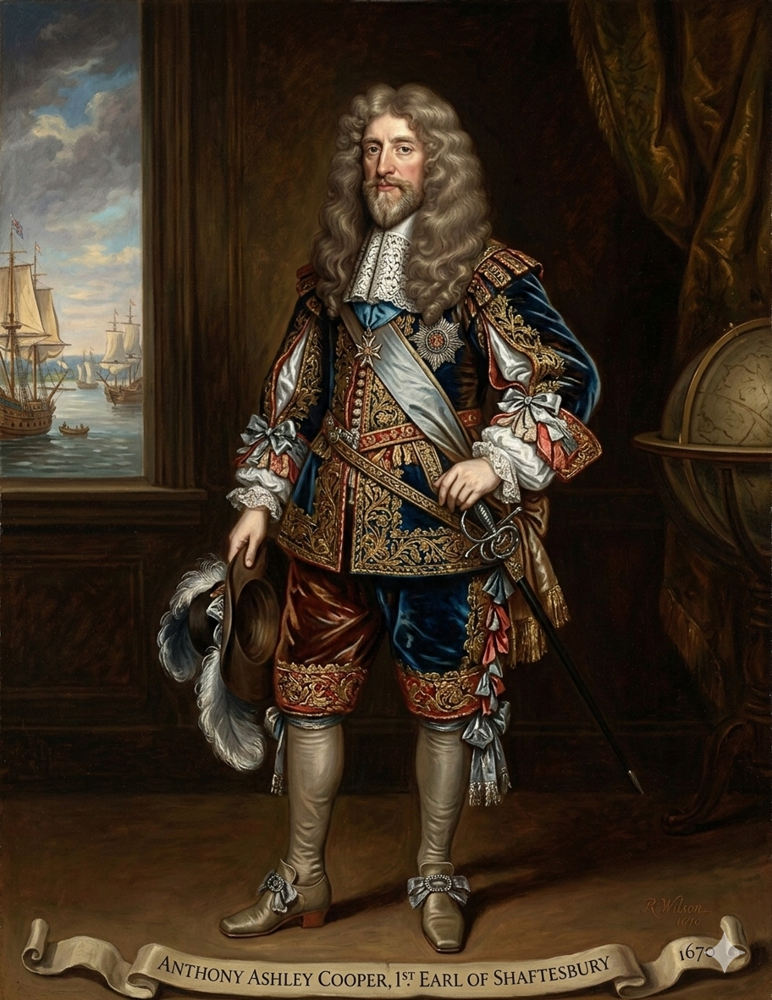
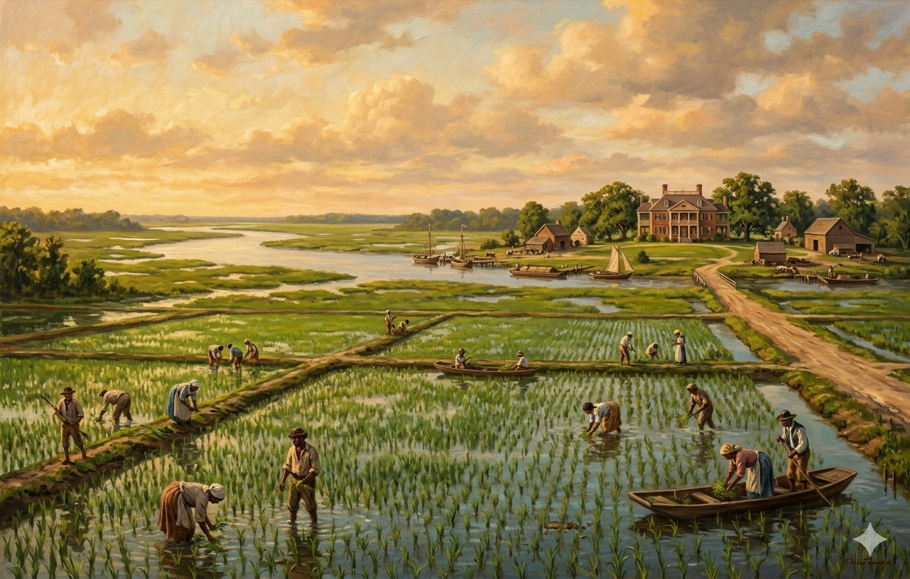

1. שנות פעילות, הקמה ויעדים
שנת הקמה: הזיכיון המקורי ניתן ב-1663. היישוב הקבוע הראשון, צ'ארלס טאון (Charleston), הוקם ב-1670. ב-1712 המושבה התפצלה רשמית לצפון ודרום.
ישות מקימה: "הלורדים הבעלים" (Lords Proprietors). המלך צ'ארלס השני העניק את האזור העצום לשמונה מאציליו המקורבים ביותר כאות תודה על עזרתם בהשבתו לכס המלוכה באנגליה.
היעדים המקוריים: המטרה הייתה מסחרית ואריסטוקרטית. הלורדים רצו להקים אחוזות ענק ולהרוויח מגביית דמי חכירה (Quitrents) מהמתיישבים. מבחינה אסטרטגית, המושבה נועדה להוות חיץ חזק בין המושבות האנגליות מצפון לבין פלורידה הספרדית מדרום.
2. רקע המייסד: הלורד שפטסברי (וג'ון לוק)

אנתוני אשלי קופר (Anthony Ashley Cooper) (1621–1683)
רקע: מבין שמונת הלורדים, אשלי קופר (הרוזן משפטסברי) היה הפעיל ביותר. בעוד השאר איבדו עניין כשהרווחים בוששו לבוא, הוא סירב לוותר. הוא מימן משלחות והוביל אישית את ניהול המושבה מלונדון.
החזון בשיתוף ג'ון לוק: ההישג/ניסוי המרתק ביותר שלו היה כתיבת "החוקות היסודיות של קרוליינה" (Fundamental Constitutions of Carolina) בשנת 1669. הוא נעזר במזכירו האישי, שהיה לא אחר מאשר הפילוסוף הנודע ג'ון לוק (John Locke). החוקה ניסתה ליצור חברה הרמונית אך בלתי שוויונית בעליל, עם אצולה מקומית מדורגת (שקיבלה תארים מומצאים כמו "Landgrave" ו-"Cacique"), ולצידה חופש דת מרחיק לכת (כולל ליהודים ולעובדי אלילים) כדי למשוך מתיישבים. המודל הפיאודלי נכשל במציאות האמריקאית, אך רוח האליטיזם נותרה.
3. אידאולוגיה: אריסטוקרטיה וחופש מסחרי
האידאולוגיה של קרוליינה הדרומית הייתה שילוב פרדוקסלי של חירות אישית קיצונית לאדונים, ושעבוד מוחלט לאחרים:
- מעמדות בלתי שבירים: בניגוד לאידאולוגיה של פנסילבניה הדוגלת בשוויון, קרוליינה הדרומית קידשה את הפער המעמדי. בעלי המטעים ראו עצמם כאצולה לכל דבר, ושלטו בפוליטיקה דרך האסיפה המקומית ללא כל התחשבות במעמדות הנמוכים.
- סובלנות ככלי כלכלי: חופש הדת שהוענק במושבה לא נבע מאידאולוגיה הומנית כמו זו של רוג'ר ויליאמס, אלא מהכורח הכלכלי למשוך כוח אדם ומשקיעים, כולל קהילה גדולה של הוגנוטים צרפתים (פרוטסטנטים נרדפים) שהביאו הון וידע.
4. גיאוגרפיה: ביצות הגאות וצ'ארלסטאון
הגיאוגרפיה של דרום קרוליינה עיצבה את הכלכלה, הבריאות והחברה שלה:
- צ'ארלסטאון (Charleston): העיר הוקמה במפגש הנהרות אשלי וקופר (על שם המייסד). הנמל העמוק והמצוין שלה הפך אותה לעיר הגדולה והעשירה ביותר בדרום, ומרכז הסחר המרכזי של כל המושבות הדרומיות.
- אזור ה-Tidewater (מי הגאות): רצועת החוף של המושבה הייתה שטוחה וביצתית, ונשלטה על ידי זרמי גאות מהאוקיינוס. אזור זה היה מסוכן ביותר לבריאות האירופאים (שפעת, מלריה וקדחת צהובה הותירו שיעורי תמותה גבוהים), אך התגלה כמושלם מבחינה הידרולוגית לדבר אחד - הצפת שדות אורז. בעלי המטעים العשירים נטו לעזוב את המטעים בקיץ ולגור באחוזותיהם המפוארות בצ'ארלסטאון המאווררת.
5. כלכלה: "זהב קרוליינה" ואינדיגו

הכלכלה של דרום קרוליינה הייתה הרווחית ביותר מבין 13 המושבות, בזכות שני גידולי ענק:
- אורז ("Carolina Gold"): האנגלים לא ידעו לגדל אורז. הידע הטכנולוגי והחקלאי להקמת מערכות הסכרים בביצות הגיע ישירות מהעבדים שיובאו ממערב אפריקה, שם היו מסורות גידול אורז מתקדמות. האורז הפך לייצוא המוביל והפך את בעלי המטעים למולטי-מיליונרים במונחי התקופה.
- אינדיגו (Indigo): בשנות ה-40 של המאה ה-18, צעירה בשם אליזה לוקאס (Eliza Lucas) פיתחה טכניקה לגידול צמח האינדיגו (המפיק צבע כחול עמוק לתעשיית הטקסטיל). האינדיגו היה גידול קיץ שמשלים את עונת האורז, והפך לגידול היצוא השני בחשיבותו.
6. דמוגרפיה: הרוב השחור וקשר ברבדוס
הדמוגרפיה של קרוליינה הדרומית הייתה ייחודית ומבוססת על יבוא מודל חברתי אכזרי מן האיים הקריביים:
- החיבור לברבדוס (Barbados Connection): מחצית מהמתיישבים הלבנים הראשונים לא הגיעו מאנגליה, אלא מהאי ברבדוס שבקריביים. האי היה צפוף מדי, ובני בעלי המטעים הגיעו לקרוליינה לחפש אדמות חדשות. הם הביאו איתם מודל מוכן ומאובזר של עבדות קשוחה, כולל חוקי עבדים מחמירים (Slave Codes) ששללו כל זכות אנושית.
- הרוב השחור: גידול האורז דרש כוח אדם עצום העמיד למחלות הביצה. קרוליינה הדרומית ייבאה כמות חסרת תקדים של עבדים. משנת 1710 לערך, היא הייתה המושבה היחידה שבה האוכלוסייה האפריקאית-אמריקאית הייתה גדולה יותר מהאוכלוסייה הלבנה הלבנה.
- תרבות הגולה (Gullah): בשל בידוד המטעים והריכוז הגבוה של עבדים ממערב אפריקה, התפתחה לאורך החוף תרבות ושפה ייחודית הנקראת "גולה" - שילוב של אנגלית ומספר שפות אפריקאיות, אשר שרדה עד ימינו.
7. מאבקי השליטה: הפיכה פנימית והדחת הלורדים
בניגוד למושבות אחרות שהמלך השתלט עליהן בכפייה, בקרוליינה הדרומית האזרחים התחננו שהמלך ייקח את השליטה מידי המייסדים:
מרד האזרחים והפיכה למושבת כתר
- מועדי המאבק: 1715 (מלחמת יאמאסי), 1719 (המרד האזרחי), ו-1729 (רכישה רשמית).
- אישים בולטים: המלך ג'ורג' הראשון, והלורדים הבעלים של המושבה.
- סיבת המאבק וההפיכה: בתחילת המאה ה-18, המושבה העשירה עמדה תחת סכנה קיומית: פלישות של שודדי ים נודעים לשמצה (כמו שחור-הזקן, שצר על צ'ארלסטאון), מתקפות מהספרדים בפלורידה, והנורא מכל - מלחמת יאמאסי (Yamasee War, 1715), שבה קואליציית שבטים אינדיאנים כמעט והשמידה את המושבה לחלוטין. לאורך כל המשברים האלה, המתיישבים זעקו לעזרה וביקשו כוחות צבא ומימון מה"לורדים הבעלים" בלונדון. הלורדים פשוט התעלמו וסירבו לבזבז את כספם הפרטי. בעלי המטעים העשירים בקרוליינה, שזעמו על נטישתם והפקרה למוות, לקחו את העניינים לידיים. בשנת 1719 הם פתחו במרד אזרחי נטול דם, הדיחו את המושל מטעם הלורדים, והקימו ממשלה משלהם. הם שלחו משלחת למלך ג'ורג' הראשון וביקשו להפוך למושבת כתר מוגנת. המלך הסכים בשמחה. ב-1729, הכתר הבריטי פשוט קנה את הזכויות משבעה מתוך שמונת הלורדים, והמושבה הפכה רשמית למושבת כתר מלכותית יציבה ובטוחה.
8. מחקר אטימולוגי: המושבה South Carolina
Carolus (קרולוס)
מקור: לטיניתהמקור של המילה "קרוליינה" מגיע מהשם הלטיני Carolus, שהוא התרגום לשם האנגלי Charles (צ'ארלס).
-ina (אינה)
מקור: סיומת לטינית/גיאוגרפיתסיומת קלאסית בגיאוגרפיה המציינת טריטוריה. הפירוש המלא למילה "קרוליינה" הוא "הארץ של צ'ארלס".
South Carolina (קרוליינה הדרומית)
הלורדים המייסדים העניקו למושבה הענקית את השם ב-1663 כדי להפגין נאמנות מוחלטת למלך צ'ארלס השני (שהעניק להם את הזיכיון). המלך עצמו שרד תקופה קשה של גלות במהלך מלחמת האזרחים האנגלית, והלורדים היו חבריו הקרובים שעזרו לו לחזור לכס המלוכה.
התוספת "הדרומית" (South) התקבעה באופן רשמי ב-1712 כאשר ניהול הטריטוריה העצומה הפך קשה מדי, והלורדים החליטו לפצל אותה מבחינה אדמיניסטרטיבית לשני מחוזות שונים: החצי הצפוני, שאופיין בחקלאים עניים ועצמאיים (North Carolina), והחצי הדרומי העשיר, האריסטוקרטי ומבוסס המטעים, שהתרכז סביב נמל צ'ארלסטאון (שקרוי גם הוא, כמובן, על שם אותו מלך).